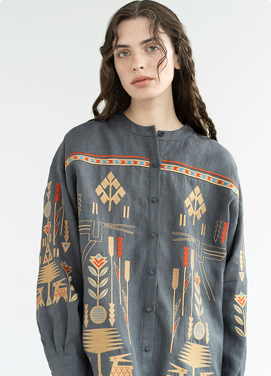
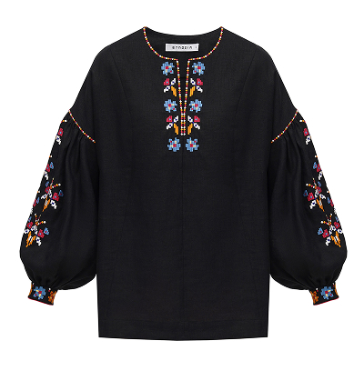
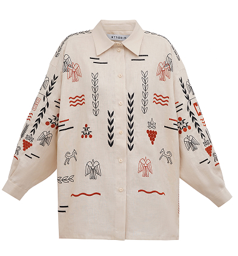
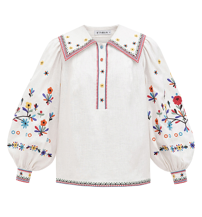
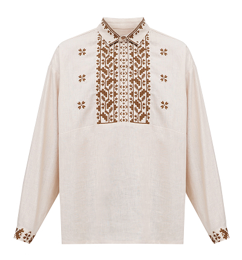
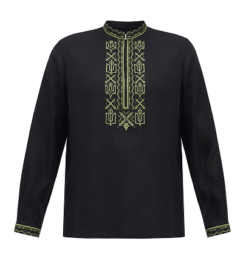
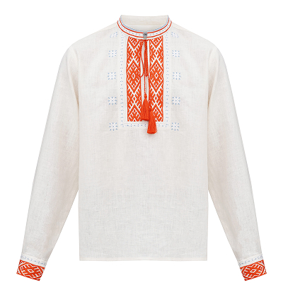

Reviving the traditional Ukrainian artistry in every stitch.
all embroidery is made by hand
About Us
The store "Vyshyvanka Vibes" is a place where traditional Ukrainian vyshyvanka comes to life with new zest and style. Our store offers a wide selection of high-quality and authentic embroidery, which combines the elegance of traditional needlework and modern design. In "Vyshyvanka Vibes" you will find various models of embroidery, from classic to modern, corresponding to the latest fashion trends. Our embroidery is made using natural fabrics and is embroidered by highly qualified craftsmen who convey the beauty of Ukrainian culture in every detail.We believe that vyshyvanka is not just clothing, but a symbol of national pride, the heritage of our ancestors and a way of expressing one's individuality. Each embroidery from "Vyshyvanka Vibes" has its own unique history and symbolism, which gives it a special meaning.

Our collection

AUGUST POLTAVA WUMEN'S BLOUSERING
3300 UAH

WOMEN'S BLOUSE GORGANY
3350 UAH

WOMEN'S BLOUSE CRIMEA
4000 UAH

MEN'S SHIRT VERKHOVINA
3100 UAH

MOUNTAIN MEN'S SHIRT
3300

MEN'S SHIRT YASEN
1700 UAH